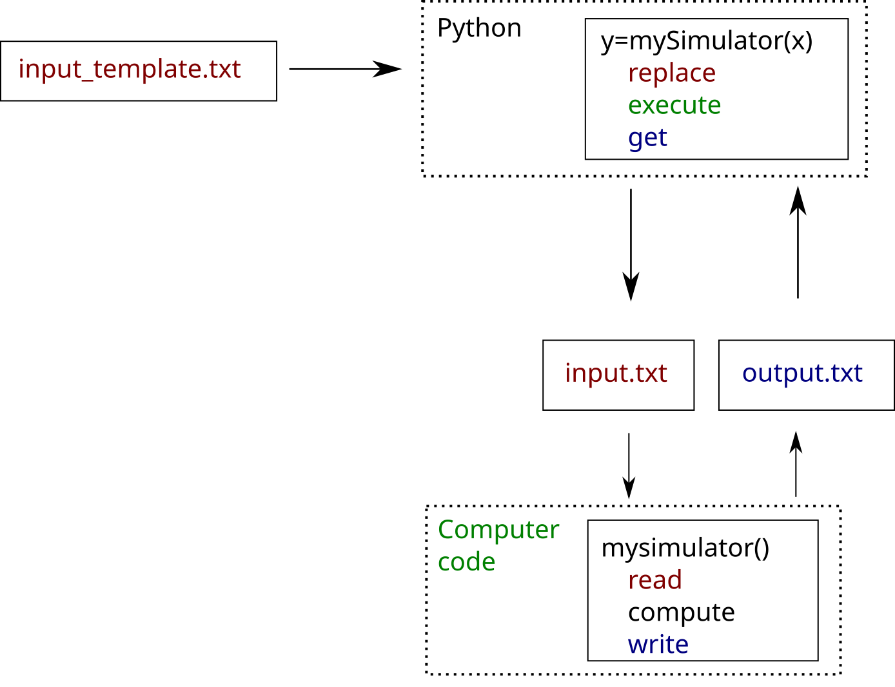

Link to a computer code with coupling tools¶
In this example we show how to use the coupling_tools module, which allows to create a function from a computer code based on text file exchanges. We show the main features of the module on a simple example and focus on the replace and get functions.
Introduction¶
The coupling_tools module is useful when the external computer code reads (on input) and write (on output) text files.

The main features of the coupling_tools module are:
replace: writes a file based on a file template, by replacing tokens with values,execute: executes an external computer code,get(andget_line_col): reads values from a file.
Moreover, the coupling_tools module can be useful outside the library, for example to evaluate a design of experiments on a cluster.
There are several advantages over basic Python scripting while using the module.
It is much simpler than using regular expressions.
Skipping lines, columns or text blocks is allowed.
It is easy to use if the input or output files are based on structured text files. With a little more Python scripting, it is even possible to parallelize it.
Example¶
We have the computer code in the external_program.py script:
it reads the
"input.txt"file,evaluates the output,
writes the
"output.txt"file.
The command line to evaluate the code is:
python external_program.py input.py
[1]:
import openturns as ot
import openturns.coupling_tools as ct
import sys
The following is the content external_program.py script.
[2]:
code = '''
# -*- coding: utf-8 -*-
# 1. Get input
import sys
inFile = sys.argv[1]
exec(open(inFile).read())
# 2. Compute
Y0 = X0 + X1 + X2
Y1 = X0 + X1 * X2
# 3. Write output
f = open("output.txt", "w")
f.write("Y0=%.17e\\n" % (Y0))
f.write("Y1=%.17e\\n" % (Y1))
f.close()
'''
[3]:
f = open("external_program.py", "w")
f.write(code)
f.close()
Let us see the content of the input.txt file: the content is in Python format, so that reading the file is easier.
[4]:
content = '''
X0=1.2
X1=45
X2=91.8
'''
[5]:
f = open("input.txt", "w")
f.write(content)
f.close()
The content of the output.txt file has a simple format.
[6]:
content = '''
Y0=1.38e+02
Y1=4.1322e+03
'''
[7]:
f = open("output.txt", "w")
f.write(content)
f.close()
The input_template.py file is a template which will be used to generate the actual file "input.txt".
[8]:
content = '''
X0=@X0
X1=@X1
X2=@X2
'''
[9]:
f = open("input_template.txt", "w")
f.write(content)
f.close()
The simulator is implemented this way:
we first use the
replacefunction in order to generate the actual input file,then we evaluate the external computer code with a system command with the
executefunction,and we read the output file with the
getfunction.
[10]:
def mySimulator ( X ):
# 1. Create input file
infile ="input_template.txt"
outfile = "input.txt"
tokens =["@X0","@X1","@X2"]
ct.replace (infile , outfile ,tokens ,X)
# 2. Compute
program = sys.executable + " external_program.py"
cmd = program +" "+ outfile
ct.execute (cmd)
# 3. Parse output file
Y = ct.get ("output.txt", tokens =["Y0=","Y1="])
return Y
In order to create the function, we simply use the PythonFunction class.
[11]:
myWrapper = ot.PythonFunction (3 ,2 , mySimulator )
We can check that this function can be evaluated.
[12]:
X = [1.2 , 45, 91.8]
Y = myWrapper(X)
Y
[12]:
[138,4132.2]
Write the input file with the replace function¶
The simplest calling sequence is:
replace (infile , outfile , tokens , values )
where
infile: a string, the (template) file to read,outfile: a string, the file to write.tokensa list of N items, the regular expressions to find,valuesa list of N items (strings, floats, etc…), the values to replace.
[13]:
X = [1.2 , 45, 91.8]
infile ="input_template.txt"
outfile ="input.txt"
tokens =["@X0", "@X1", "@X2"]
ct.replace (infile , outfile , tokens , X)
To see the change, let us look at the input.txt file.
[14]:
f = open("input.txt", "r")
print(f.read())
X0=1.2
X1=45
X2=91.8
Read the output with the get function¶
The simplest calling sequence is:
# Get a list of values
Y= get ( filename , tokens = None , skip_tokens = None , \
skip_lines = None , skip_cols = None )
# Get a single value
Y= get_value ( filename , token = None , skip_token = 0, \
skip_line = 0, skip_col = 0)
where
filename: string, the file to read,tokens: list of N items, the regular expression to search,skip_tokens: list of N items, the number of tokens to ignore before reading the value,skip_lines: list of N items, the number of rows to ignore before reading the value,skip_cols: list of N items, the number of columns to ignore before reading the value,Y: list of N floats (forget) or a float (forget_value).
Consider for example the following file.
[15]:
content = '''
1 2 3 04 5 6
7 8 9 10
11 12 13 14
'''
[16]:
f = open("results.txt", "w")
f.write(content)
f.close()
We want to read the number 9.
[17]:
Y = ct.get_value ("results.txt" , skip_line = 1, skip_col = 2)
Y
[17]:
3.0